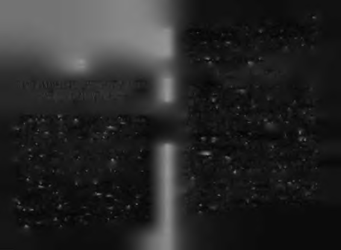
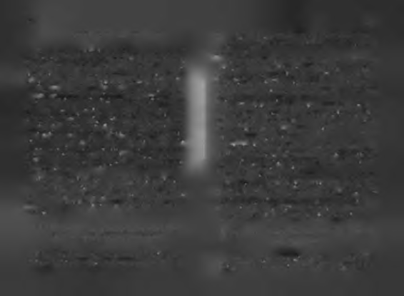

Siz de bir düşünün; şu anda hayatınız bir yöne doğru akıreği çatışınca ne yaparız? Mantıklı olmanın gereği ile anlık yor, peki siz ne yapıyorsunuz? Bir şeyler yapmak gerekiyor
psikolojimiz çatışınca ne yaparız? Bu anons başarıda çok kriama hiçbir şey yapmıyorsanız, muhtemelen gelecekte istetik bir durumu vurgular.
mediğiniz bir yerde olacaksınız.
Anons 3: "Şimdi iniş için alçalmaya başlıyoruz! Lütfen yerle
Böyle giderse ömrünüzün son on yılı nasıl geçecek? Bir
rinize dönün, koltuklarınızı dik, masalarınızı kapalı duruma geti
gün emekli olup evinizde sallanan koltuğunuzda tek başı
rin ve kemerlerinizi bağlayın!"
nıza oturup hayatınızı düşünürken kendinize hayatınız hakkında neler söyleyeceksiniz? Geçmişte yaptıklarınız ve se
Bu, son anonslardandır. Yükselen her şeyin bir gün inişe
çimleriniz nedeniyle kendinizi nasıl yargılayacaksınız? Kengeçeceğini hatırlatır. İnsan yükselişine nasıl hazırlamışsa dinize saygı duyacağınız bir öykü çıkacak mı ortaya? Anlamkendini, inişe de o kadar özenle hazırlanmalıdır.
lı ve iz bırakan bir hayat yaşadığınızı düşünecek misiniz?
Sırada kendi kanatlarıyla uçmak için bilinmesi gereken
Yaşamak istediğiniz hayatı, yaşadığınız hayatı, aradaki
sosyal başarı dersleri var.
farkları, bu farkları kapatmak için yapılması gerekenleri ve
Önce bu derslerin önemini anlatan bir fıkra anlatmak istehemen şimdi yapabileceklerinizi bir düşünün. Kalkın ve herim.
Bir gün bir uçakta, çeşitli hayvanlar seyahat etmektedir.
men bir şeyler yapın. Yarın geç olmadan, hayatınıza sahip çı
Karga bin bir muziplik yapıp hosteslere laf atar, diğer yolkın. "Bu sizin için son çağrıdır!"
cuları rahatsız eder. Onun yaptığı her şeyin yanma kâr kaldı
Anons 2: " Kabin basıncı düşünce, oksijen maskeleri koltuğu
ğını gören eşek de benzer şeyler yapmaya başlar.
nuzun üstünden açılacaktır. Çocuklu annelerin önce kendi maske
Bir süre sonra, güvenlik gelir. Uçağın kapısını açıp eşek ile
lerini, sonra çocuklarının maskelerini takması gerekmektedir."
kargayı tuttukları gibi pencereden aşağı atarlar.
Uçak kalkarken duyulan bu anons ilginç bir tercih nokta
Eşek şaşkın bir şekilde aşağıya doğru düşerken, karga
sını vurguluyor bence; akıl mı, anlık psikoloji mi? Akıl der ki;
uçarak yanma gelir. Karga halinden gayet memnun, muziplik yapmaya devam etmektedir ama eşek aşağıya düşüyor ani kabin basıncı düşüklüğünde, az zamanda oksijenle bağlantı kurmak gerekir. Her saniye kritiktir. Bu yüzden önce olmaktan dolayı panik halinde sorar:
kendi maskenizi takın. Önce çocuğunuzunkini takmayı denerse
-Ben ne yapacağım şimdi?
niz, o panik halinde çocuk maskeyi çıkarmaya, siz takmaya çalışır
Karga cevap verir:
ken, kendiniz de oksijensiz kalıp kontrolünüzü kaybedebilirsiniz.
-Eee, sen de madem uçmayı bilmiyorsun, neden eşeklik ediyor
Oysa önce kendi maskenizi takarsanız, sonra çocuğunuzla
sun?!
İşte sosyal hayatta başarı dersi-1: Henüz kendi kanatlarıyrahatlıkla uğraşabilirsiniz. Akıl böyle der de, biz ne yaparız?
"Fedakâr anne" kimliği gereği ile mantıklı anne olmanın gela uçmayı öğrenmeden eşeklik etmeye başlamamak gerekir!

7/9
Shakespeare bu olayı duysaydı, " Başarmak ya da başarama-
mak, işte bütün mesele bul" derdi. Acı ama gerçek, başarımız kadar adam yerine konuyoruz. Başarımızın büyüklüğü kadar saygı görüyoruz. Hatta neyi başarırsak, ona göre tanımlanıyoruz.
Başarısızsak, "anonim"leşiyoruz.
B ir iç b a ş a ra m a d ın , o halde yo ksu n !
KENDİ KANATLARIYLA UÇMAK İSTEYENLER İÇİN
Ne ilginçtir ki, Orta Asya Türk topluluklarında başarılı ol
YENİ BİR "BAŞARI MÜFREDATI"
mayan çocukların adı yoktur!
Eski Türk töresine göre, çocuğa doğar doğmaz isim k<m-
maz, gerçekleştirdiği ilk büyük başarısına göre ona bir işim
verilir. Dede Korkut hikâyelerinden birinde, bir çocuk azgm
Sais'teki Siuph kentinde doğmuş olan Amasis önceleri sıbir boğayı cesurca mücadele ederek yener ve bu b aşarım radan bir adamdı. Mısırlıların gözünde pek değerli biri dedan sonra adı "Boğaç Han" olur.
ğildi. Bir süre sonra sıkı bir mücadeleyle Mısır tahtını ele ge
Peki ya kayda değer hiçbir iş başaramayan çocuklar? Tarihçi
çirdi. Bu başarısından sonra aniden Mısırlılar onu takdir etlere göre ilk on dört yıl beklenir, bu sürede çocuk isinıs iz meye başladılar!
yaşar! Bir tür anonim insan hayatı! Bu sürede çocuk bir şey
Başarılı olduktan sonra insanların ona karşı davranışlarıbaşaramazsa, süre sonunda obaya gelen ilk yabancının ismi nın değiştiğini gören Amasis, bunu kendine hatırlatmak için
o çocuğa verilir. İlk görülen "yabancı" insan olabildiği %ibi,
ilginç bir yol buldu.
hayvan da olabilir. Geyik ise çocuğa geyik ismi verilir, tilki
Yunanlı tarihçi Heredotos, "Tarih" adlı kitabında bu olayı
şöyle anlatır:
ise tilki!
Bu uygulamayı eski Türklerin başarıya ne kadar değer
"Hâzinesinde altın bir tas vardı. Tasın içinde ayaklarını yıkardı. Tası kırdırdı ve bununla bir tanrı heykeli yaptırıp kentin orta
verdiklerinin bir kanıtı olarak görüyorum. Eğer Orta Asya
sına diktirdi. Bunda eskiden ayaklarım yıkadığını söyledi. İnsanlar
steplerinde yaşanan bu gelenek devam ediyor olsaydı azaba
eskiden bu tasın içine işiyorlar, ayaklarını yıkıyorlar ve kusuyor-
adınız ne olurdu? Adınızı ilk büyük başarınızdan aldığınızda inlarken, şimdi onun önünde diz çöküyorlardı. Kendi kaderini de bu sanlar sizi nasıl çağırırdı?n
tasa benzetiyordu. Eskiden önemsiz bir adamken, şimdi kral olmuştu ve herkes ona hizmet ediyordu."

80